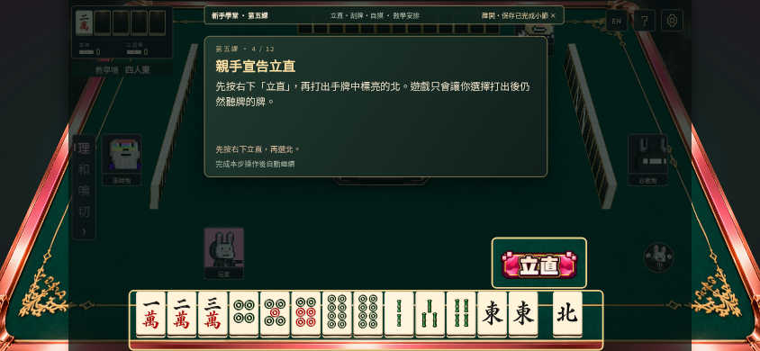
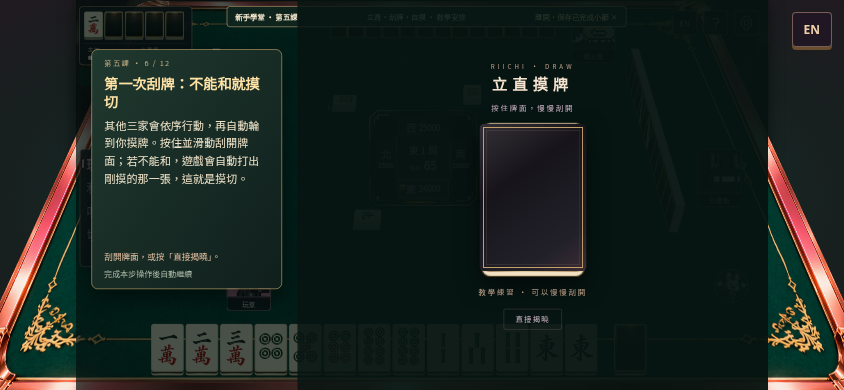
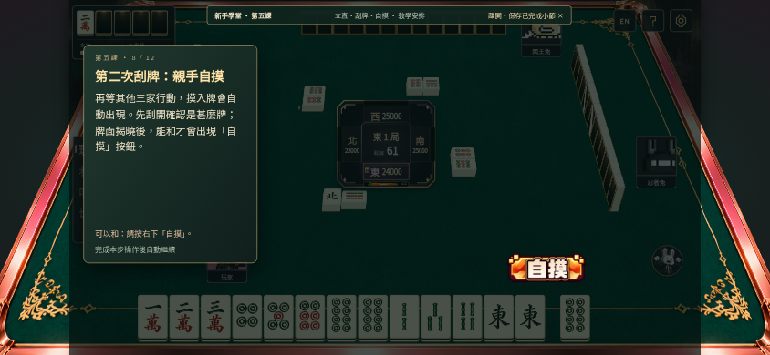
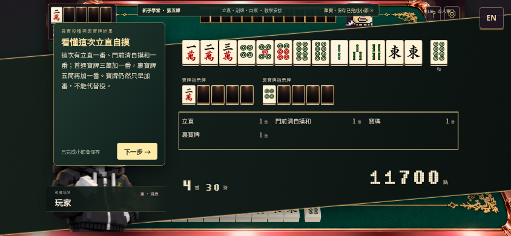

BUNNY ACADEMY · COURSE 05立直！等到你的自摸
固定牌局帶你完成一次立直、一次不能和的摸切，再刮出自摸牌。正式對局不保證會贏。
進入公開版第五課 →01｜親手立直
先找到聽牌預覽，了解四項條件，再按立直、打出北。真實扣除1,000點並顯示宣告橫牌。

02｜慢慢刮開，自動摸切
提示卡在左，刮牌區在右。本課無倒數；正式遊戲最多十秒、逾時自動揭曉。

03｜揭曉後才可以自摸
不能和的九索會自動摸切；下一圈刮出八筒，才出現自摸按鈕。

04｜役與裏寶牌
立直＋門前清自摸和，加上普通寶牌與裏寶牌。使用真正引擎計分的4番30符結算。

首次100體驗紅蘿蔔，只保存在目前瀏覽器；第五課完成後前往第六課目錄。